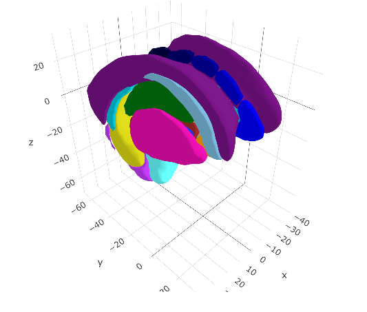
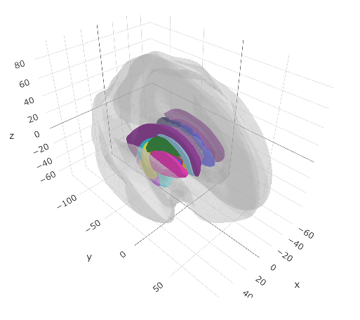

Here we provide an example of creating a cortical ggseg and ggseg3d atlas. To read more about the details of the process, see the vignette on creating custom3d atlases and creating custom polygon atlases.
Prerequisites
To successfully run these operations, you must have the following installed on your system, and be running it on either a Linux or Mac.
- FSL
- FreeSurfer
- R
- Imagemagick
- orca
Initiate your R script with the following library calls:
Creating a 3d atlas
The template file
Subcortical segmentations are usually stored in volumetric images with .mgz extension. These usually also include the cortex, white matter and CSF. Some volumetric segmentations may contain both segmentations of the cortex and the subcortex. If you have such a template, we would recommend making a version where the cortex is one large segmentation, and rather create a separate cortical atlas.
The 3d atlas
We assume the volumetric image you have is for a freesurfer subject, specifically registered to the “fsaverage5” subject, which is a good balande between number of vertices and details. If you need to register the volume to “fsaverage5”, there are FreeSurfer tools to help with this, but we have not set up any function for this in R. If you have suggestions or know of an easy command to do this, les ut know in the issues so we can try implementing your solution here.
To turn a volumetric image to a ggseg3d-atlas, use the function make_volumetric_2_3datlas. This will call a series of FreeSurfer functions to create ascii and ply files for the mesh plots. The function creates several intermediary files which are saved in the output_dir specified.
# Make 3d ----
aseg2_3d <- make_volumetric_2_3datlas(
subject = "fsaverage5",
subjects_dir = freesurfer::fs_subj_dir(),
template = file.path(freesurfer::fs_subj_dir(), "fsaverage5/mri/aseg.mgz"),
output_dir = "~/Desktop/aseg"
)
ggseg3d(atlas = aseg2_3d)
aseg2_3dCleaning the atlas data
The atlas data usually needs some manual editing to get it into a nice shape for other users, and for nice plotting. We are avid tidyverse users, and as such the procedures we use here to clean the data use tidyverse functions.
First, we will unnest the ggseg_3d column, so we can see what the atlas data contains.
unnest(aseg2_3d, ggseg_3d)# A tibble: 43 x 8
atlas surf hemi region colour label roi mesh
<chr> <chr> <chr> <chr> <chr> <chr> <chr> <list>
1 aseg_3d LCBC subcort Left-Cerebral-White-Matter #F5F5F5 Left-Cerebral-White-Matter 0002 <named list [2]>
2 aseg_3d LCBC subcort Left-Cerebral-Cortex #CD3E4E Left-Cerebral-Cortex 0003 <named list [2]>
3 aseg_3d LCBC subcort Left-Lateral-Ventricle #781286 Left-Lateral-Ventricle 0004 <named list [2]>
4 aseg_3d LCBC subcort Left-Inf-Lat-Vent #C43AFA Left-Inf-Lat-Vent 0005 <named list [2]>
5 aseg_3d LCBC subcort Left-Cerebellum-White-Matter #DCF8A4 Left-Cerebellum-White-Matter 0007 <named list [2]>
6 aseg_3d LCBC subcort Left-Cerebellum-Cortex #E69422 Left-Cerebellum-Cortex 0008 <named list [2]>
7 aseg_3d LCBC subcort Left-Thalamus-Proper #00760E Left-Thalamus-Proper 0010 <named list [2]>
8 aseg_3d LCBC subcort Left-Caudate #7ABADC Left-Caudate 0011 <named list [2]>
9 aseg_3d LCBC subcort Left-Putamen #EC0DB0 Left-Putamen 0012 <named list [2]>
10 aseg_3d LCBC subcort Left-Pallidum #0C30FF Left-Pallidum 0013 <named list [2]>
# … with 33 more rowsUsually, it is the region column we want to do some cleaning of, to make the names of the regions more human readable. This column is populated by the names to each region as specified in the template file.
We can inspect all the unique values in this column, so we can start setting up some logic for renaming the regions.
region1 region2 region3 region4
"Left-Cerebral-White-Matter" "Left-Cerebral-Cortex" "Left-Lateral-Ventricle" "Left-Inf-Lat-Vent"
region5 region6 region7 region8
"Left-Cerebellum-White-Matter" "Left-Cerebellum-Cortex" "Left-Thalamus-Proper" "Left-Caudate"
region9 region10 region11 region12
"Left-Putamen" "Left-Pallidum" "3rd-Ventricle" "4th-Ventricle"
region13 region14 region15 region16
"Brain-Stem" "Left-Hippocampus" "Left-Amygdala" "CSF"
region17 region18 region19 region20
"Left-Accumbens-area" "Left-VentralDC" "Left-vessel" "Left-choroid-plexus"
region21 region22 region23 region24
"Right-Cerebral-White-Matter" "Right-Cerebral-Cortex" "Right-Lateral-Ventricle" "Right-Inf-Lat-Vent"
region25 region26 region27 region28
"Right-Cerebellum-White-Matter" "Right-Cerebellum-Cortex" "Right-Thalamus-Proper" "Right-Caudate"
region29 region30 region31 region32
"Right-Putamen" "Right-Pallidum" "Right-Hippocampus" "Right-Amygdala"
region33 region34 region35 region36
"Right-Accumbens-area" "Right-VentralDC" "Right-vessel" "Right-choroid-plexus"
region37 region38 region39 region40
"WM-hypointensities" "Optic-Chiasm" "CC_Posterior" "CC_Mid_Posterior"
region41 region42 region43
"CC_Central" "CC_Mid_Anterior" "CC_Anterior" The region names for this atlas mainly need some white space in-between certain words to make the names readable. For instance, all dashes (-) can be replaced with white space. We’ll try to see other such patterns and how we can easily alter names so they look nicer.
unnest(aseg2_3d, ggseg_3d) %>%
mutate(region = gsub("-|_", " ", region),
region = tolower(region),
region = gsub("cc ", "corpus callosum ", region)
) %>%
select(region) %>%
unique() %>%
unlist() region1 region2 region3 region4
"left cerebral white matter" "left cerebral cortex" "left lateral ventricle" "left inf lat vent"
region5 region6 region7 region8
"left cerebellum white matter" "left cerebellum cortex" "left thalamus proper" "left caudate"
region9 region10 region11 region12
"left putamen" "left pallidum" "3rd ventricle" "4th ventricle"
region13 region14 region15 region16
"brain stem" "left hippocampus" "left amygdala" "csf"
region17 region18 region19 region20
"left accumbens area" "left ventraldc" "left vessel" "left choroid plexus"
region21 region22 region23 region24
"right cerebral white matter" "right cerebral cortex" "right lateral ventricle" "right inf lat vent"
region25 region26 region27 region28
"right cerebellum white matter" "right cerebellum cortex" "right thalamus proper" "right caudate"
region29 region30 region31 region32
"right putamen" "right pallidum" "right hippocampus" "right amygdala"
region33 region34 region35 region36
"right accumbens area" "right ventraldc" "right vessel" "right choroid plexus"
region37 region38 region39 region40
"wm hypointensities" "optic chiasm" "corpus callosum posterior" "corpus callosum mid posterior"
region41 region42 region43
"corpus callosum central" "corpus callosum mid anterior" "corpus callosum anterior" Once we are satisfied with the region names, we should also alter the atlas name in the data, to something a little more pleasing.
unnest(aseg2_3d, ggseg_3d) %>%
mutate(region = gsub("-|_", " ", region),
region = tolower(region),
region = gsub("cc ", "corpus callosum ", region),
atlas = "aseg2_3d"
) # A tibble: 43 x 8
atlas surf hemi region colour label roi mesh
<chr> <chr> <chr> <chr> <chr> <chr> <chr> <list>
1 aseg2_3d LCBC subcort left cerebral white matter #F5F5F5 Left-Cerebral-White-Matter 0002 <named list [2]>
2 aseg2_3d LCBC subcort left cerebral cortex #CD3E4E Left-Cerebral-Cortex 0003 <named list [2]>
3 aseg2_3d LCBC subcort left lateral ventricle #781286 Left-Lateral-Ventricle 0004 <named list [2]>
4 aseg2_3d LCBC subcort left inf lat vent #C43AFA Left-Inf-Lat-Vent 0005 <named list [2]>
5 aseg2_3d LCBC subcort left cerebellum white matter #DCF8A4 Left-Cerebellum-White-Matter 0007 <named list [2]>
6 aseg2_3d LCBC subcort left cerebellum cortex #E69422 Left-Cerebellum-Cortex 0008 <named list [2]>
7 aseg2_3d LCBC subcort left thalamus proper #00760E Left-Thalamus-Proper 0010 <named list [2]>
8 aseg2_3d LCBC subcort left caudate #7ABADC Left-Caudate 0011 <named list [2]>
9 aseg2_3d LCBC subcort left putamen #EC0DB0 Left-Putamen 0012 <named list [2]>
10 aseg2_3d LCBC subcort left pallidum #0C30FF Left-Pallidum 0013 <named list [2]>
# … with 33 more rowsOf note, at this stage, you can also add other columns of importance to the atlas. As long as these to not conflict in terms of names with the default atlas columns, you can add as many extra columns as you wish. For instance, if this is an atlas based on connectivity, there might be a nested structure to the regions, such that certain regions together form a specific network. Adding a network column specifying which regions belong to which network is then appropriate.
The data include too much though! We cannot see the subcortical structures because the entire cortex is in the way. We should delete the any unnecessary meshes as a whole from the data, so we are only left with subcortical structures.
aseg2_3d <- unnest(aseg2_3d, ggseg_3d) %>%
mutate(region = gsub("-|_", " ", region),
region = tolower(region),
region = gsub("cc ", "corpus callosum ", region),
atlas = "aseg2_3d"
) %>%
filter(!grepl("Cortex|White-Matter", label))
ggseg3d(atlas = aseg2_3d)
Finalizing the atlas
We are now happy with the atlas data we’ve cleaned, so we can go ahead and make it into a ggseg3d-atlas class again by nesting the atlas data by surface and hemisphere
aseg2_3d <- aseg2_3d %>%
nest_by(atlas, surf, hemi, .key = "ggseg_3d") %>%
as_ggseg3d_atlas()
aseg2_3d# A tibble: 1 x 4
atlas surf hemi ggseg_3d
<chr> <chr> <chr> <list>
1 aseg2_3d LCBC subcort <tibble [35 × 5]>
ggseg3d(atlas = aseg2_3d) %>%
add_glassbrain()
Creating the 2d atlas
Unlike the pipeline for cortical atlases which uses the newly made ggseg3d-atlas to create polygon data, the volumetric pipeline uses the volumetric-image just as for creating the ggseg3d-atlas above. Using a combination of FreeSurfer’s Freeview snapshotting andImageMagick, the make_ggseg3d_2_ggseg() function takes snapshots of each region, for each hemisphere and lateral/medial view, extracts the contours of these regions, smooth’es them, reduces the vertices and organizes the data into a brain-atlas class object. The function creates a lot of intermediary files (mostly snapshots), and will likely require you to re-run several steps to produce the wanted end result. While the function at default stores these files in a temporary folder, we highly recommend setting the output_dir option, so that you do not need to rerun all steps when testing another configuration of settings. For instance, the step taking the longest time and most processing time is snapshotting the regions and extracting the contours. But these two steps only need to be run once, as long as the ggseg3d-atlas has not changed somehow.
# make atlas ----
aseg2 <- make_volumetric_ggseg(
label_file = file.path(freesurfer::fs_subj_dir(), "fsaverage5", "mri/aseg.mgz"),
vertex_size_limits = c(10, NA),
)● 1/7 Snapshotting views of entire atlas to ~/Desktop//dkt
✓ Snapshots complete
● 2/7 Snapshotting individual regions to ~/Desktop//dkt/img
✓ Region snapshots complete
● 3/7 Isolating regions to ~/Desktop//dkt/masks
● & writing masks to ~/Desktop//dkt/regions
✓ isolation complete
● 4/7 Extracting contours from regions
|===================================================================| 100%, Elapsed 00:25
✓ contours complete
● 5/7 Smoothing contours
✓ Smoothing complete
● 6/7 Reducing vertexes
✓ Vertexes reduced
● 7/7 Making data frame
✓ Atlas complete with 3694 verticesThe most likely steps to redo are steps 5-7, tweaking the smoothness and tolerance arguments to improve how the polygons look and how many vertices there are. The fewer vertices, the faster the plot renders, but too few and the polygons will look poor.
Inspecting the atlas object
First step is to have a look at the actual object. If the brain-atlas is correctly set up, the output should look like the below.
dkt# dkt cortical brain atlas
regions: 31
hemispheres: left, right
side views: lateral, medial
palette: yes
use: ggplot() + geom_brain()
----
hemi side region label roi
<chr> <chr> <chr> <chr> <chr>
1 left lateral caudal middle frontal lh_caudalmiddlefrontal 0002
2 left lateral fusiform lh_fusiform 0005
3 left lateral inferior parietal lh_inferiorparietal 0006
4 left lateral inferior temporal lh_inferiortemporal 0007
5 left lateral lateral occipital lh_lateraloccipital 0009
6 left lateral lateral orbitofrontal lh_lateralorbitofrontal 0010
7 left lateral middle temporal lh_middletemporal 0013
8 left lateral pars opercularis lh_parsopercularis 0016
9 left lateral pars orbitalis lh_parsorbitalis 0017
10 left lateral pars triangularis lh_parstriangularis 0018
# … with 71 more rowsSecond step is to make sure the data is being plotted correctly.
plot(dkt)
In most cases, given the values in the 3d-atlas’ colour column is correctly applied, but problems may arise given how annotation files are set up.
Fixing the palette
Many annotation files have a unique colour for the same regions but in different hemispheres. This can often mess up the palette for the 2d-atlas, which needs the regions in the different hemispheres to have the same palette colour.
If you are working with an atlas that does not have a colour-scheme dispatched with the atlas, the palette should be set to NULL.
dkt$palette <- NULL
dkt# dkt cortical brain atlas
regions: 31
hemispheres: left, right
side views: lateral, medial
palette: no
use: ggplot() + geom_brain()
----
hemi side region label roi
<chr> <chr> <chr> <chr> <chr>
1 left lateral caudal middle frontal lh_caudalmiddlefrontal 0002
2 left lateral fusiform lh_fusiform 0005
3 left lateral inferior parietal lh_inferiorparietal 0006
4 left lateral inferior temporal lh_inferiortemporal 0007
5 left lateral lateral occipital lh_lateraloccipital 0009
6 left lateral lateral orbitofrontal lh_lateralorbitofrontal 0010
7 left lateral middle temporal lh_middletemporal 0013
8 left lateral pars opercularis lh_parsopercularis 0016
9 left lateral pars orbitalis lh_parsorbitalis 0017
10 left lateral pars triangularis lh_parstriangularis 0018
# … with 71 more rowsWhen there is no palette, the default atlas plot will return with default ggplot2 colours. This is absolutely a valid option. The palette is an optional part of the atlas.
plot(dkt)
If you want to correctly apply a palette, the dkt$palette part of the atlas is a named character vector, where the value of the vector is the hex-colour code, and the names of the elements are the region names as seen in the region column of the atlas data.
Summary
All together, the script to create both 3d and 2d atlases of the aseg parcellation looks like this:
library(ggsegExtra)
library(ggseg)
library(tidyverse)
# Make 3d ----
aseg2_3d <- make_aseg_2_3datlas(
subject = "fsaverage5",
subjects_dir = freesurfer::fs_subj_dir(),
template = file.path(freesurfer::fs_subj_dir(), "fsaverage5", "mri/aseg.mgz"),
output_dir = "~/Desktop/aseg"
)
ggseg3d(atlas = aseg2_3d)
# make atlas ----
aseg2 <- make_volumetric_ggseg(subject = "fsaverage5",
steps = 1:8,
output_dir = "~/Desktop/aseg",
vertex_size_limits = c(10, NA),
label_file = file.path(freesurfer::fs_subj_dir(), "fsaverage5", "mri/aseg.mgz"))
aseg2$data <- filter(aseg2$data,
!grepl("Unknown", label, ignore.case = TRUE),
!grepl("White-matter", label, ignore.case = TRUE)
) %>%
mutate(region = ifelse(grepl("cortex", region), NA, region))
plot(aseg2, alpha = .8)